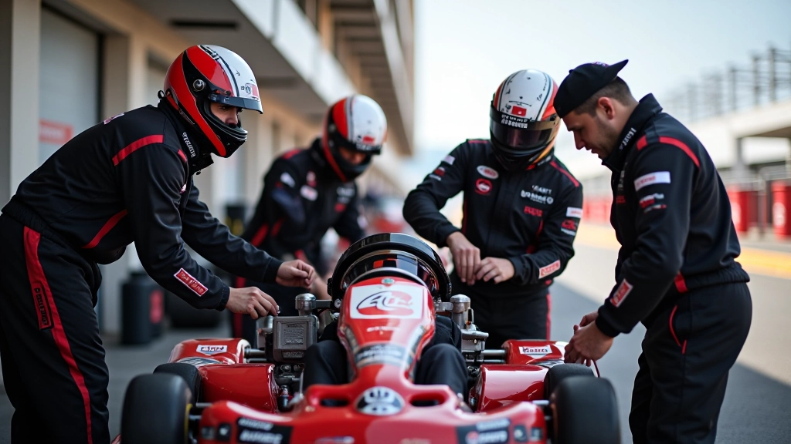
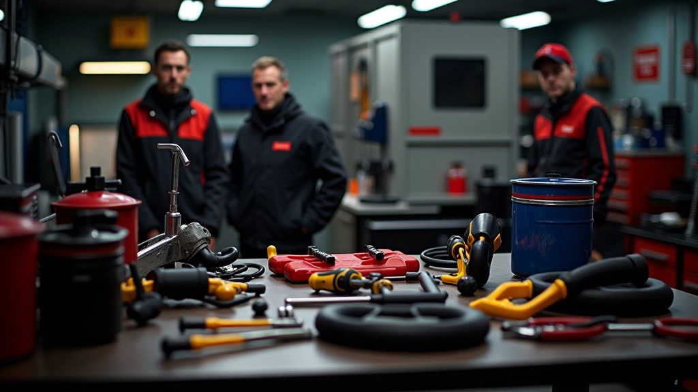

أساسيات تقسيم الأدوار في فريق التحمل
فهم كيفية توزيع المهام بين سائقي الفريق والتحضير الصحيح لكل دور.
كيفية إجراء فحوصات الصيانة الأساسية والإصلاحات السريعة خلال فترات التبديل. نصائح عملية لضمان الأداء المستمر.
في سباقات التحمل، الفريق الذي يعمل بسرعة وكفاءة في منطقة الصيانة يكسب السباق. لا يتعلق الأمر فقط بسرعة السائق — إنه يتعلق بفريق يفهم ماذا يفعل بالضبط ومتى يفعله.


كل دقيقة تقضيها في منطقة الصيانة هي دقيقة لا تقضيها على المسار. لكن تجاهل الصيانة يعني مشاكل أكبر — فقدان الأداء، أعطال محركية، أو أسوأ من ذلك، عدم إكمال السباق على الإطلاق.
الفريق الجيد يعرف الفرق بين ما يحتاج فحص سريع وما يمكن تأجيله. يتحركون بنظام واضح. لا يوجد ارتباك. لا يوجد أشخاص يتساءلون عما يجب فعله بعد ذلك. هذا هو الفارق بين فريق يقود بذكاء وفريق يقود فقط.
إطارات، مستويات السوائل، تفتيش سريع للهيكل
تعديلات التوقف، استبدال الوسادات، الضبط السريع
كل أداة في مكانها، فريق يعرف دوره
الإطارات هي أول شيء يجب فحصه. لا تحتاج إلى أجهزة متقدمة — استخدم عينك. هل الإطار يبدو متآكلاً بشكل غير متساوٍ؟ هل هناك انتفاخ أو قطع؟ إذا كان الإطار لديه حياة واحدة فقط متبقية، قرر الآن ما إذا كان الاستبدال يستحق الوقت.
فحص الفرامل يأخذ 30 ثانية. أنظر إلى وسادات الفرامل — هل لديهم مادة متبقية أم أنهم مستهلكون؟ إذا كانت الوسادات رقيقة جداً، استبدلها الآن. السباق الطويل يعني الفرامل تسخن. لا تأخذ الخطر. استبدال وسادات الفرامل يستغرق حوالي دقيقة واحدة إذا كنت منظماً.
افحص عمق الإطار باستخدام عملة معدنية أو مقياس عمق
تحقق من الضغط — يجب أن يكون داخل نطاق الشركة المصنعة
افحص وسادات الفرامل من جميع الجوانب
تأكد من عدم وجود تسرب سوائل الفرامل


محركات الكارتينج لا تحتاج إلى الكثير من الصيانة، لكن السوائل مهمة. تحقق من سائل التبريد — إذا كان منخفضاً جداً، أضف المزيد. تحقق من الزيت إذا كان محركك يستخدمه. إذا بدا الزيت داكناً جداً أو لزجاً، فقد حان وقت التغيير.
لا تنسَ الفتحة الهوائية في نظام التبريد. إذا كانت مسدودة، فإن محركك سيسخن بسرعة. تنظيفها يأخذ 20 ثانية. سائل البطارية أيضاً — لا تريد بطارية ميتة في منتصف السباق. تحقق من الاتصالات بحثاً عن التآكل أو الفضفاضة.
بعد عدة جولات، قد يكون هناك ضرر طفيف لا تلاحظه على المسار. تفتيش بصري سريع يمكن أن ينقذ الموقف. ابحث عن الشقوق في الهيكل أو التشوهات. إذا كان الهيكل ملتصقاً أو مشوهاً، فقد يؤثر ذلك على الديناميكا الهوائية والتعامل.
تحقق من جميع براغي وتوصيلات. السباق الطويل يعني الاهتزاز المستمر. يمكن للبراغي أن تتفكك ببطء. استخدم مفتاح ربط محمول للتحقق بسرعة من البراغي الحرجة — خاصة حول مرفق المحرك والعجلات.

الفريق الفعال يعرف بالضبط ماذا يفعل قبل دخول السيارة إلى منطقة الصيانة. لا وقت للتخطيط — فقط التنفيذ. إليك كيفية تنظيم الفريق:
لديك 30 ثانية قبل دخول السيارة. تأكد من أن جميع الأدوات موجودة. الوسادات الاحتياطية معدة. سائل التبريد جاهز. الفريق يعرف دوره. لا ارتباك.
السيارة في الفرامل. فريقان — شخص على كل عجلة يفحص الإطارات والفرامل بسرعة. شخص في المحرك يفحص السوائل. تقارير سريعة.
إذا لزم الأمر — استبدال الوسادات، ضبط ضغط الإطارات، تنظيف الفتحات. كل إصلاح لديه شخص مسؤول. بدون تأخير.
فحص سريع لكل شيء. براغي محكمة؟ جميع الاتصالات جيدة؟ السائق جاهز للعودة؟ إشارة. السيارة تعود إلى المسار.
لا تحتاج إلى مجموعة أدوات متقدمة لصيانة سريعة فعالة. ركز على الأساسيات. إليك ما يستخدمه الفريق الجيد:
10-15 ملم لمعظم براغي الكارتينج. خفيف الوزن وسريع.
رقمي أو تناظري — لا يهم. يجب أن يقرأ بسرعة وبدقة.
تحضيرها مقدماً. يجب أن تكون قابلة للتثبيت في دقيقة واحدة.
في زجاجات صغيرة أو أنابيب. لا تنسَ القمع الصغير.
لفحص الأماكن الضيقة والهيكل السفلي بسرعة.
اكتب كل ما يحتاج فحص. اشطب كل عنصر. لا تنسَ شيء.
مارس عمليات الصيانة قبل السباق الفعلي. أخبر الفريق بدورهم. اسأل كل شخص: هل تعرف ماذا تفعل؟ الفريق الذي يعرف ما يفعله يعمل بدون ارتباك.
عندما تجد مشكلة، أخبر القائد على الفور. لا تحاول إصلاح كل شيء بمفردك. إذا كانت المشكلة كبيرة جداً، قرر بسرعة: هل نصلحها أم ننسى هذا التبديل؟
تعرف على الأشياء التي تحدث عادة في سيارتك. إذا كانت الوسادات تتآكل بسرعة، جهز بدلاً اضافياً. إذا كانت الإطارات تفقد الضغط، افحصها في كل توقف.
كل ثانية في منطقة الصيانة تعني جولة أقل على المسار. إذا لم تكن المشكلة حرجة، تجاهلها. التركيز على الأشياء المهمة فقط. السرعة والكفاءة ينتصران دائماً.
الصيانة السريعة ليست معقدة — إنها تتعلق بالمنطق والتنظيم والتدريب. فريق يعرف ماذا يفعل يمكنه إجراء فحص كامل وأي إصلاحات ضرورية في 3-5 دقائق. هذا يعني المزيد من الوقت على المسار، وأداء أفضل، وفرصة أفضل للفوز.
لا تتجاهل الصيانة. لا تأخذ الأخطاء على محمل الجد. تفتيش منتظم يوقف المشاكل قبل أن تبدأ. فريق منظم ومدرب يعمل بسلاسة. وسيارة معتنى بها تؤدي أداء أفضل. هذه ليست معادلة معقدة — إنها صيغة النجاح في سباقات التحمل.
ركز على الأساسيات. مارس عملياتك. تأكد من أن فريقك يعرف دوره. وعندما تدخل السيارة منطقة الصيانة، دع الكفاءة تتحدث عن نفسها.
هذا المحتوى مخصص لأغراض تعليمية وإعلامية فقط. لا يعتبر نصيحة تقنية أو متخصصة. كل سيارة وفريق لديهم احتياجات فريدة. استشر دائماً دليل السيارة المصنع والفنيين المتخصصين لأي صيانة أو إصلاحات. الممارسة الآمنة وفهم قوانين السباق المحلية ضروري. لا نتحمل مسؤولية أي أضرار أو خسائر ناشئة عن استخدام هذه المعلومات.